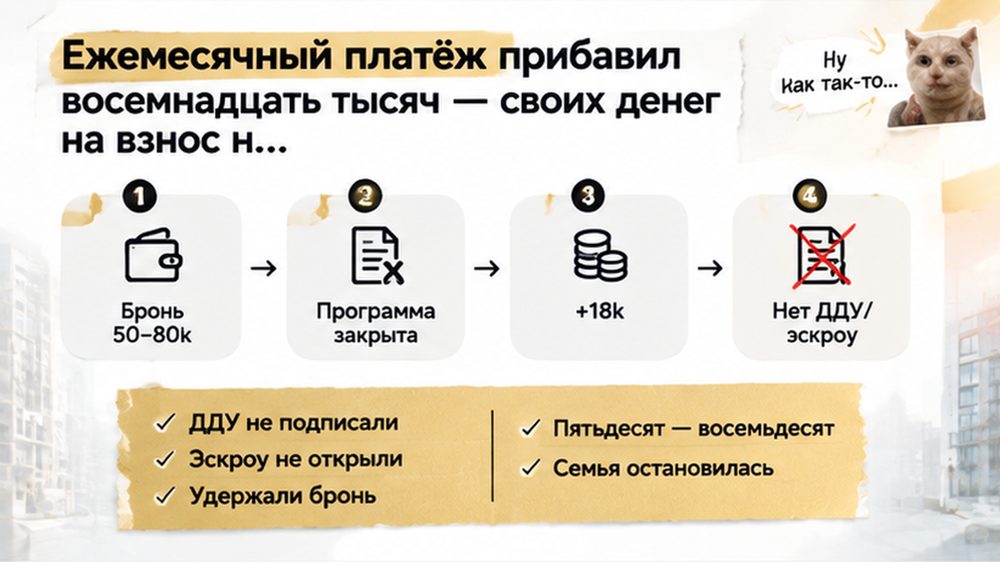

За два дня до подписания ДДУ страховка прибавила семье около 18 000 ₽ к ежемесячному платежу — и банк в тот же день снял одобрение ипотеки на новостройку в Тюмени. Квартира была выбрана, бронь действовала, а в одобрении страховка выглядела одной оценочной цифрой — пока страховщик не пересчитал полис по анкете и не поднял нагрузку выше лимита банка. Эскроу не открыли, а за бронью в 60–90 тысяч рублей остался отдельный спор с застройщиком. Семья успела остановиться до подписания договора, но уже почувствовала, насколько хрупкой бывает связка «одобрение — страховка — бронь».
Я Святослав Шакин, The Риэлтор, Тюмень. Разбираю ипотеку на новостройку не по красивому платежу в одобрении, а по финальному полису и брони. Смотреть разборы и задать вопрос можно в Telegram и MAX.
Семья выбрала квартиру в тюменской новостройке и собиралась покупать её по договору долевого участия. Банк уже одобрил ипотеку, застройщик зафиксировал объект, в расчёте стояли сумма кредита, срок и предполагаемый ежемесячный платёж. Со стороны казалось, что осталось только подписать документы и открыть эскроу-счёт.
В одобрение включили страховку жизни и здоровья заёмщика. При наличии такого полиса банк сохранял более выгодные условия по ставке, поэтому страховка выглядела обычной частью ипотечного расчёта. Семья исходила из простой логики: если банк уже учёл полис, финальный платёж не должен заметно измениться.
Но цифра в одобрении могла быть только предварительной. Банк считал нагрузку по данным, которые были у него на момент рассмотрения заявки, а страховая компания оформляла итоговый полис после анкеты и проверки конкретного человека. Между этими двумя этапами и появилась разница, которая для семейного бюджета оказалась совсем не технической.
Это не тот случай, когда банк просто меняет ставку перед подписанием ДДУ. Сначала нужно понять, какая именно страховка заложена в одобрение и что произойдёт с платежом, если финальная премия окажется выше. В Тюмени уже разбирали ситуацию, когда банк пересмотрел условия прямо перед ДДУ: платёж вырос из-за изменения ставки, и сделку пришлось остановить.
Есть и важное различие между видами страховки. Страхование заложенного имущества связано с самой квартирой и требованиями закона об ипотеке. Страхование жизни и здоровья чаще влияет на ставку и общую стоимость кредита. В разговоре их нередко называют одним словом — «страховка», хотя для сделки это два разных расхода и два разных набора последствий.
До финального оформления семья увидела в одобрении ориентировочную сумму страховки жизни и здоровья. Ежемесячный платёж выглядел посильным, и именно на него покупатели опирались, когда принимали решение о брони. Квартира уже не просто понравилась на просмотре — под неё собирали конкретную сделку по ДДУ.
Бронь у застройщика обычно означает, что выбранный объект временно снимают с продажи. Что произойдёт при срыве сделки, зависит от соглашения: деньги могут вернуть полностью, удержать часть или предложить другой вариант. Здесь речь шла примерно о 60–90 тысячах рублей — это уже отдельная сумма риска, особенно когда одновременно неожиданно вырос ипотечный платёж.
Пока семья ждала финальный полис, одобрение воспринималось как подтверждение всей конструкции. Но одобрение не всегда означает, что банк больше ничего не проверит до подписания кредитных документов. Если в заявке появляется новый регулярный расход, банк может заново оценить нагрузку и решить, проходит ли заёмщик по его ограничениям.
Поэтому до внесения крупной суммы за бронь нужно было сопоставить три цифры: какую премию заложили в предварительный расчёт, сколько запросит выбранный страховщик и каким станет платёж после выпуска полиса. Если они не совпадают, риск возникает ещё до ДДУ — не в момент открытия эскроу, а тогда, когда покупатель считает сделку почти готовой.
За два дня до подписания ДДУ семья получила от страховщика из списка банка окончательный расчёт. В одобрении раньше стояла примерная стоимость страховки жизни и здоровья. Теперь полис посчитали по анкете и данным конкретных заёмщиков — и ежемесячный платёж вырос примерно на 18 000 ₽.
Это уже был не выбор между «оформить страховку» и «сэкономить на полисе». Новая сумма вошла в расчёт ипотечной нагрузки. Банк увидел другой регулярный расход и заново проверил, проходит ли семья по своим ограничениям.
Здесь важно не смешивать разные виды страхования. Страхование залога связано с квартирой и требованиями к ипотечному имуществу. Личная страховка жизни и здоровья может влиять на ставку и условия кредита, если это предусмотрено программой банка. Но точные последствия нужно смотреть в документах: где-то меняется ставка, а где-то итоговый платёж становится настолько выше, что приходится пересматривать всё одобрение.
Семья рассчитывала, что финальный полис просто подтвердит уже принятое банком решение. Но предварительный расчёт и настоящая страховая премия оказались разными цифрами. До ДДУ оставалось два дня — времени спокойно сравнить варианты, получить новый расчёт и при необходимости заново пройти банковскую проверку почти не осталось.
Пока не известны финальный тариф, состав застрахованных лиц и влияние полиса на платёж, ипотека ещё не собрана до конца. Особенно если квартира уже забронирована, дата подписания назначена, а за срыв сделки могут удержать деньги.

После того как в расчёт попал новый платёж, банк пересмотрел нагрузку семьи и отозвал ипотечное одобрение. Проблема была не в самой новостройке и не в том, что застройщик изменил условия. Просто расход на страховку стал выше, а вместе с ним изменилась оценка платёжеспособности.
Сделка остановилась ещё до подписания ДДУ. Эскроу-счёт не открыли: для этого требовались заключённый договор и предусмотренные ипотечной процедурой действия. Семья осталась с выбранной квартирой, действующей бронью и необходимостью понять, можно ли пересобрать одобрение.
Отдельно встал вопрос о брони. На кону было примерно 60–90 тысяч рублей. Вернут ли эту сумму полностью, частично или удержат, зависело от текста соглашения, сроков и причины прекращения сделки. Сам по себе отзыв ипотечного одобрения ещё не делает деньги автоматически возвратными. Нужно было смотреть договор бронирования и переписку с застройщиком, а не полагаться только на устное обещание менеджера.
Перед ДДУ есть и другие точки риска: банк может пересмотреть ставку или условия программы уже после брони. В одном тюменском случае ставку подняли накануне ДДУ, в другом — сняли одобрение за шесть дней до договора, когда изменились правила акции застройщика.
Поэтому одобрение в приложении банка не всегда означает, что сделка уже защищена до открытия эскроу. Если финальная страховка способна добавить к платежу 18 000 рублей, её стоимость лучше выяснить до брони и заранее получить от банка подтверждение нового расчёта. Тогда несостыковку можно остановить до ДДУ, а не искать выход, когда деньги уже зависли в условиях бронирования.

На практике спор начинается с бумаг: в одобрении одна сумма премии, в полисе — другая. После анкеты страховщик может пересчитать договор, и банк увидит новый регулярный расход — в этом кейсе около 18 000 ₽ в месяц сверх расчёта.
До брони у банка и страховщика нужно запросить не общую фразу «страховка обязательна», а конкретные цифры: какой полис учитывается, кто его оформляет, сколько стоит премия и каким станет ежемесячный платёж. Если сумма предварительная, это должно быть прямо обозначено. Предварительная цена — ещё не гарантия, что именно её банк возьмёт в финальный расчёт.
До брони попросите у банка и страховщика разные строки расчёта: полис на квартиру, полис на жизнь и здоровье, итоговый платёж с каждой позицией. Если в ответе одна общая цифра без расшифровки, это повод задать вопросы до перевода денег за бронь.
Попросите банк письменно подтвердить, какая премия заложена в одобрение, изменится ли ставка без личного полиса и нужно ли пересчитывать заявку после получения финального договора страхования. Важно также узнать срок действия одобрения: если банк вправе пересмотреть решение после передачи полиса, бронь с суммой 60–90 тысяч рублей уже нельзя считать безопасным первым шагом.
Если одобрение есть, а эскроу ещё нет, смотрите и другие стоп-факторы: в одном тюменском кейсе счёт так и не открыли после одобрения семейной ипотеки.

| Что сравнить | Оценочный расчёт | Финальный полис |
|---|---|---|
| На чём основан расчёт | На предварительных данных в заявке | На заполненной анкете и условиях конкретного страховщика |
| Кто определяет сумму | Банк или первоначальный калькулятор | Страховая компания из списка банка |
| Что происходит с платежом | В одобрении указана ориентировочная нагрузка | Банк может пересчитать платёж и долговую нагрузку |
| Что выяснить до брони | Является ли сумма предварительной | Примет ли банк полис и сохранит ли прежние условия |
| Главный риск | Кажется, что бюджет уже подтверждён | Одобрение могут отозвать после увеличения нагрузки |

Нельзя утверждать, что каждый банк пересчитает ипотеку именно так. Но в этой сделке произошло именно это: после увеличения платежа банк пересмотрел нагрузку, снял одобрение, а эскроу не открыли. Поэтому письменный финальный расчёт до брони — не формальность, а проверка того, выдерживает ли сделка собственный бюджет.
Если страховка меняет платёж, безопаснее остановиться до ДДУ: запросить новый расчёт, проверить условия возврата брони и получить от банка подтверждение, что полис подходит. Одна пауза до передачи денег может оказаться намного дешевле попытки догнать сделку после отзыва одобрения.
Если страховка в последний день добавляет восемнадцать тысяч к платежу — вы успеваете пересобрать одобрение или откладываете покупку?
До оплаты брони можно спокойно сверить страховку и одобрение. Напишите мне в Telegram или MAX: начнём с расчёта полиса и письма банка, а не с обещания «платёж не изменится».
Если хотите проверить связку «ипотека — страховка — бронь — ДДУ», отправьте ситуацию через форму на сайте. Важно не отказываться от покупки из-за одного случая, но и не считать одобрение окончательным, пока банк не подтвердил финальные цифры.
В этой семье сделку остановила не цена квартиры, а одна строка, которую успели пересчитать слишком поздно. До брони можно сверить премию, до ДДУ — запросить письменное подтверждение банка, а при несостыковке поставить сделку на паузу.
Материал не заменяет индивидуальную юридическую консультацию.